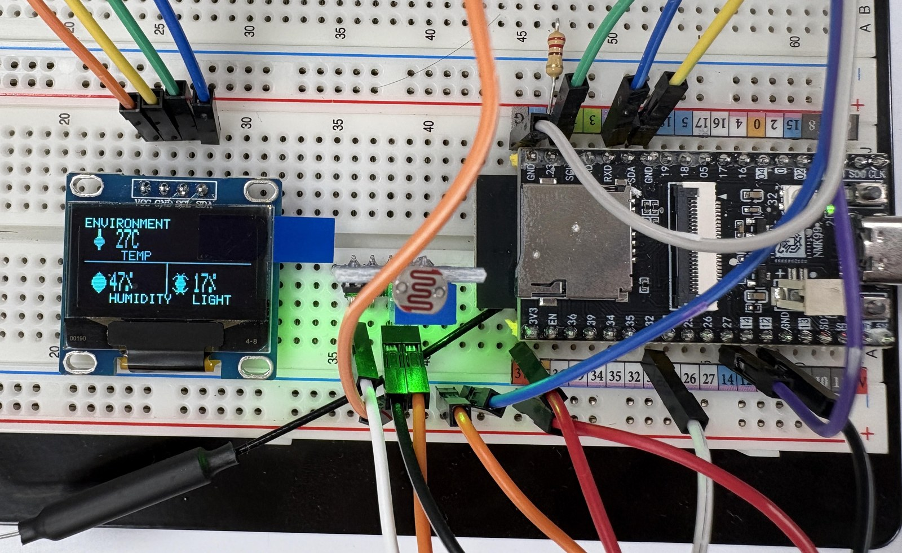
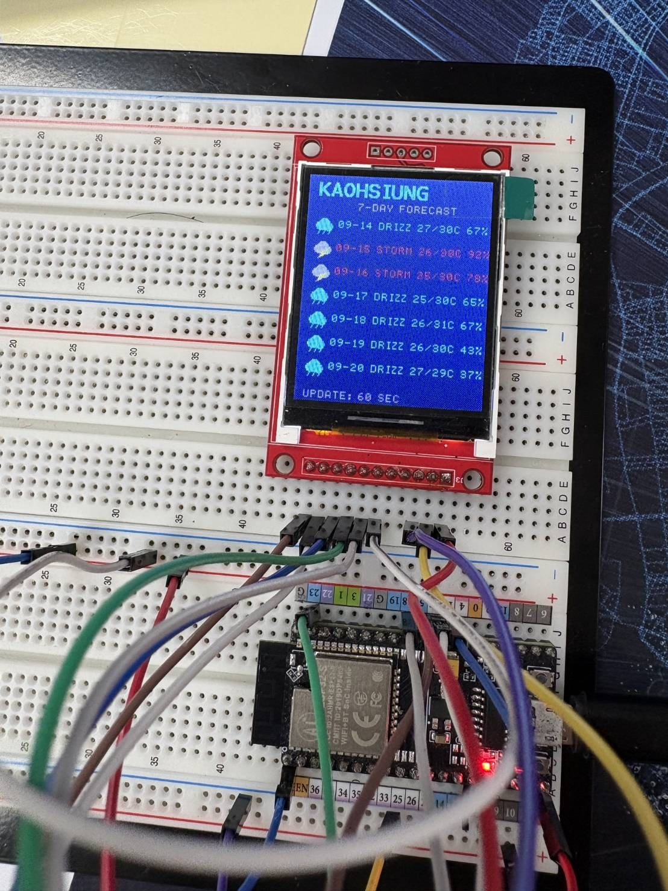
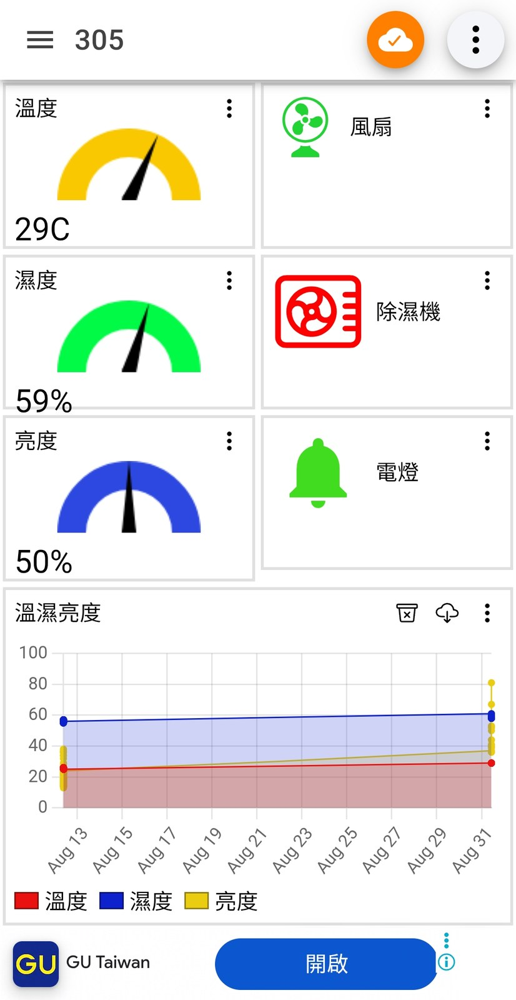
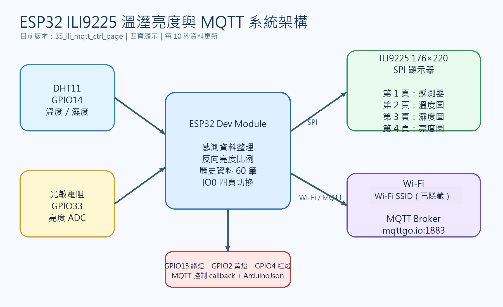
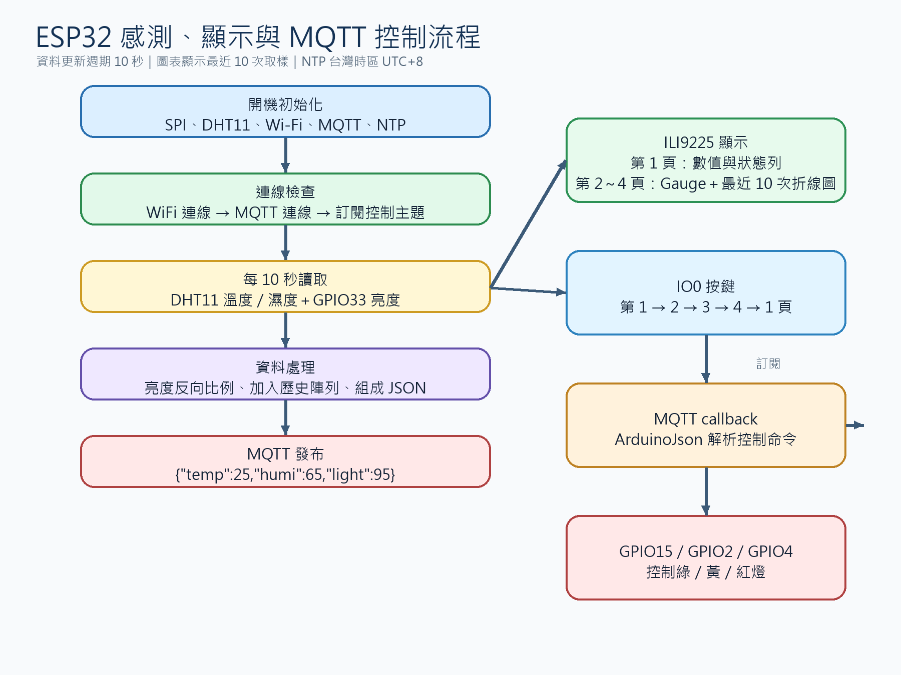

OPEN HARDWARE · ESP32 PROJECT
讓環境資料
被看見、被傳送、被控制。
以 ESP32 為核心，串接 DHT11、光敏電阻、MQTT、ILI9225 TFT 與微雪 2.9 吋三色電子紙，完成一套可觀察、可操作的感測展示系統。
60 s更新週期
3感測／顯示介面
MQTT遠端控制
ESP32 SENSOR ONLINE
♨26°C溫度
◒62%濕度
☼78%亮度
RED · WHITE · BLACK / SPI READY
01 · SYSTEM
一條資料流，五個清楚的階段。
感測器取得環境資訊後，由 ESP32 整理成資料，透過 MQTT 傳送，同時更新顯示器並接收燈號控制指令。
01感測DHT11
光敏電阻
→光敏電阻
02處理ESP32
每 60 秒
→每 60 秒
03發布Wi‑Fi
MQTT JSON
→MQTT JSON
04顯示TFT
電子紙
→電子紙
05控制LED
Callback
Callback
02 · HARDWARE
硬體配置
從腳位開始清楚。
課程統一使用 ESP32 腳位，讓電子紙、感測器與燈號控制可以依照同一份接線規格重現。
模組訊號GPIO
電子紙DIN / MOSI23
電子紙SCK18
電子紙CS / DC / RST / BUSY27 / 26 / 25 / 34
感測器DHT11 / 光敏電阻14 / 33
輸出燈號綠 / 黃 / 紅15 / 2 / 4
03 · MQTT
用 MQTT 讓資料
流向需要的地方。
感測資料以 JSON 發布；燈號則透過三個控制主題訂閱。Wi‑Fi SSID 與密碼不放入公開展示內容。
BROKERmqttgo.ioPORT 1883 · PubSubClient
感測資料／發布
alex/class301/data綠燈／訂閱
alex/class301/ctrl/gled黃燈／訂閱
alex/class301/ctrl/yled紅燈／訂閱
alex/class301/ctrl/led4{
"temp": 25,
"humi": 60,
"light": 75
}04 · RESULTS
從接線到畫面，
留下可閱讀的成果。
公開展示只使用已整理過的素材；照片與架構圖已移除或遮蔽個人資訊及 Wi‑Fi 識別資料。





05 · PROGRAMS
每支程式，
各自負責一件事。
從單一感測器測試逐步整合到電子紙與 MQTT，保留清楚的學習路徑。